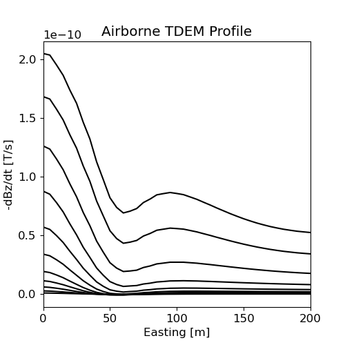
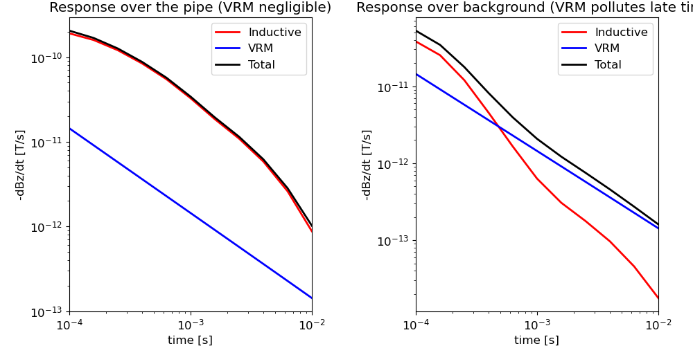

Note
Click here to download the full example code
Forward Simulation Including Inductive Response¶
Here we use the modules SimPEG.electromagnetics.viscous_remanent_magnetization and SimPEG.electromagnetics.time_domain to simulation the transient response over a conductive and magnetically viscous Earth. We consider a small-loop, ground-based survey which uses a coincident loop geometry. Earth is comprised of a conductive pipe and resistive surface layer as well as a magnetically viscous top-soil.
We will assume you have already viewed the previous VRM tutorials. For this tutorial, we focus on the following:
How to define the magnetic properties for a log-uniform relaxation model
How the TDEM response is different near and far away from strong conductors
To first order, the total response is equal to the sum of the inductive and VRM responses. That is, we can model the inductive and VRM responses with separate simulations, then add them together to compute the total response.
Import modules¶
import SimPEG.electromagnetics.viscous_remanent_magnetization as vrm
import SimPEG.electromagnetics.time_domain as tdem
from SimPEG import maps
from discretize import TensorMesh, CylMesh
from discretize.utils import mkvc
import numpy as np
import matplotlib.pyplot as plt
import matplotlib as mpl
try:
from pymatsolver import Pardiso as Solver
except ImportError:
from SimPEG import SolverLU as Solver
# sphinx_gallery_thumbnail_number = 3
Transmitter Locations, Receiver Locations and Time Channels¶
Here were define the properties of the survey that will be used in both the TDEM and VRM simulations.
# Observation times for response (time channels)
time_channels = np.logspace(-4, -2, 11)
# Defining transmitter locations
xtx, ytx, ztx = np.meshgrid(np.linspace(0, 200, 41), [0], [55])
source_locations = np.c_[mkvc(xtx), mkvc(ytx), mkvc(ztx)]
ntx = np.size(xtx)
# Define receiver locations
xrx, yrx, zrx = np.meshgrid(np.linspace(0, 200, 41), [0], [50])
receiver_locations = np.c_[mkvc(xrx), mkvc(yrx), mkvc(zrx)]
Simulate Inductive Response¶
Here, we simulate the transient response on a cylindrical mesh. This simulation is a copy of the Time-Domain Electromagnetic tutorial for simulating the Step-Off Response on a Cylindrical Mesh.
# Define the waveform object for tdem simulation. Here we use the step-off.
tdem_waveform = tdem.sources.StepOffWaveform(offTime=0.0)
# Define survey object
tdem_source_list = []
for ii in range(ntx):
dbzdt_receiver = tdem.receivers.PointMagneticFluxTimeDerivative(
receiver_locations[ii, :], time_channels, "z"
)
tdem_receivers_list = [
dbzdt_receiver
] # Make a list containing all receivers even if just one
tdem_source_list.append(
tdem.sources.MagDipole(
tdem_receivers_list,
location=source_locations[ii],
waveform=tdem_waveform,
moment=1.0,
orientation="z",
)
)
tdem_survey = tdem.Survey(tdem_source_list)
# Define cylindrical mesh
hr = [(10.0, 50), (10.0, 10, 1.5)]
hz = [(10.0, 10, -1.5), (10.0, 100), (10.0, 10, 1.5)]
mesh = CylMesh([hr, 1, hz], x0="00C")
# Define model
air_conductivity = 1e-8
background_conductivity = 1e-1
layer_conductivity = 1e-2
pipe_conductivity = 1e1
ind_active = mesh.gridCC[:, 2] < 0
model_map = maps.InjectActiveCells(mesh, ind_active, air_conductivity)
conductivity_model = background_conductivity * np.ones(ind_active.sum())
ind_layer = (mesh.gridCC[ind_active, 2] > -200.0) & (mesh.gridCC[ind_active, 2] < -0)
conductivity_model[ind_layer] = layer_conductivity
ind_pipe = (
(mesh.gridCC[ind_active, 0] < 50.0)
& (mesh.gridCC[ind_active, 2] > -10000.0)
& (mesh.gridCC[ind_active, 2] < 0.0)
)
conductivity_model[ind_pipe] = pipe_conductivity
# Plot conductivity model
mpl.rcParams.update({"font.size": 12})
fig = plt.figure(figsize=(5.5, 6))
plotting_map = maps.InjectActiveCells(mesh, ind_active, np.nan)
log_model = np.log10(conductivity_model) # So scaling is log-scale
ax1 = fig.add_axes([0.14, 0.1, 0.6, 0.85])
mesh.plotImage(
plotting_map * log_model,
ax=ax1,
grid=False,
clim=(np.log10(layer_conductivity), np.log10(pipe_conductivity)),
)
ax1.set_title("Conductivity Model (Survey in red)")
ax1.plot(receiver_locations[:, 0], receiver_locations[:, 2], "r.")
ax2 = fig.add_axes([0.76, 0.1, 0.05, 0.85])
norm = mpl.colors.Normalize(
vmin=np.log10(layer_conductivity), vmax=np.log10(pipe_conductivity)
)
cbar = mpl.colorbar.ColorbarBase(
ax2, norm=norm, orientation="vertical", format="$10^{%.1f}$"
)
cbar.set_label("Conductivity [S/m]", rotation=270, labelpad=15, size=12)
# Simulate the inductive response
time_steps = [(5e-06, 20), (0.0001, 20), (0.001, 21)]
tdem_simulation = tdem.simulation.Simulation3DMagneticFluxDensity(
mesh, survey=tdem_survey, sigmaMap=model_map, Solver=Solver
)
tdem_simulation.time_steps = time_steps
dpred_tdem = tdem_simulation.dpred(conductivity_model)
Out:
/Users/josephcapriotti/opt/anaconda3/envs/simulation/lib/python3.8/site-packages/SimPEG/utils/code_utils.py:413: FutureWarning:
Solver has been deprecated, please use simulation.solver. It will be removed in version 0.16.0 of SimPEG.
/Users/josephcapriotti/opt/anaconda3/envs/simulation/lib/python3.8/site-packages/SimPEG/utils/code_utils.py:420: FutureWarning:
Solver has been deprecated, please use simulation.solver. It will be removed in version 0.16.0 of SimPEG.
/Users/josephcapriotti/opt/anaconda3/envs/simulation/lib/python3.8/site-packages/SimPEG/utils/code_utils.py:413: FutureWarning:
loc has been deprecated, please use location. It will be removed in version 0.16.0 of SimPEG.
Define VRM Survey¶
Here we define the sources, the receivers and the survey for the VRM simulation. A better description is provided in the tutorial Response from a Magnetically Viscous Soil using OcTree.
# Define the transmitter waveform.
vrm_waveform = vrm.waveforms.StepOff(t0=0)
vrm_source_list = []
for pp in range(0, receiver_locations.shape[0]):
# Define the receivers
loc_pp = np.reshape(receiver_locations[pp, :], (1, 3))
vrm_receivers_list = [
vrm.receivers.Point(
loc_pp, times=time_channels, fieldType="dbdt", orientation="z"
)
]
# Define the source
dipole_moment = [0.0, 0.0, 1.0]
vrm_source_list.append(
vrm.sources.MagDipole(
vrm_receivers_list,
mkvc(source_locations[pp, :]),
dipole_moment,
vrm_waveform,
)
)
# Define the VRM survey
vrm_survey = vrm.Survey(vrm_source_list)
Defining the Mesh¶
Here we create the tensor mesh that will be used to simulate the VRM response. We are modeling the response from a magnetically viscous layer. As a result, we do not need to model the Earth at depth. For this example the layer is 20 m thick.
Defining the model¶
For a log-uniform distribution of time-relaxation constants, the magnetic viscosity is defined by 4 parameters: chi0, dchi, tau1 and tau2. We must define these values for each cell.
# Amalgamated magnetic property for VRM (see Cowan, 2016)
chi0_value = 0.0
dchi_value = 0.5
tau1_value = 1e-8
tau2_value = 1e0
chi0_model = chi0_value * np.ones(mesh.nC)
dchi_model = dchi_value * np.ones(mesh.nC)
tau1_model = tau1_value * np.ones(mesh.nC)
tau2_model = tau2_value * np.ones(mesh.nC)
# Cells below the Earth's surface and/or cells exhibiting magnetic viscosity.
ind_active = np.ones(mesh.nC, dtype="bool")
Define the Simulation¶
Unlike the previous VRM tutorials, we model the VRM response using the Simulation3DLogUniform formulation. For this simulation class, we must define the 4 parameters for each cell.
# Defining the problem
vrm_simulation = vrm.Simulation3DLogUniform(
mesh,
survey=vrm_survey,
indActive=ind_active,
refinement_factor=1,
refinement_distance=[100.0],
chi0=chi0_model,
dchi=dchi_model,
tau1=tau1_model,
tau2=tau2_model,
)
Predict Data and Plot¶
# Predict VRM response. Right now, non of the properties for the log-uniform
# simulation are invertible. As a result, a model is not entered as an
# argument when predicting the data.
dpred_vrm = vrm_simulation.dpred()
# Reshape the data vectors for plotting.
n_times = len(time_channels)
n_loc = receiver_locations.shape[0]
dpred_tdem = np.reshape(dpred_tdem, (n_loc, n_times))
dpred_vrm = np.reshape(dpred_vrm, (n_loc, n_times))
dpred_total = dpred_tdem + dpred_vrm
# TDEM Profile
fig = plt.figure(figsize=(5, 5))
ax1 = fig.add_subplot(111)
for ii in range(0, len(time_channels)):
ax1.plot(
receiver_locations[:, 0], -dpred_total[:, ii], "k"
) # -ve sign to plot -dBz/dt
ax1.set_xlim((0, np.max(xtx)))
ax1.set_xlabel("Easting [m]")
ax1.set_ylabel("-dBz/dt [T/s]")
ax1.set_title("Airborne TDEM Profile")
fig = plt.figure(figsize=(10, 5))
# Decays over the pipe
ax1 = fig.add_axes([0.1, 0.1, 0.35, 0.85])
ax1.loglog(time_channels, -dpred_tdem[0, :], "r", lw=2)
ax1.loglog(time_channels, -dpred_vrm[0, :], "b", lw=2)
ax1.loglog(time_channels, -dpred_total[0, :], "k", lw=2)
ax1.set_xlim((np.min(time_channels), np.max(time_channels)))
ax1.set_xlabel("time [s]")
ax1.set_ylabel("-dBz/dt [T/s]")
ax1.set_title("Response over the pipe (VRM negligible)")
ax1.legend(["Inductive", "VRM", "Total"], loc="upper right")
# Decay away from pipe
ax2 = fig.add_axes([0.6, 0.1, 0.35, 0.85])
ax2.loglog(time_channels, -dpred_tdem[-1, :], "r", lw=2)
ax2.loglog(time_channels, -dpred_vrm[-1, :], "b", lw=2)
ax2.loglog(time_channels, -dpred_total[-1, :], "k", lw=2)
ax2.set_xlim((np.min(time_channels), np.max(time_channels)))
ax2.set_xlabel("time [s]")
ax2.set_ylabel("-dBz/dt [T/s]")
ax2.set_title("Response over background (VRM pollutes late time)")
ax2.legend(["Inductive", "VRM", "Total"], loc="upper right")
- 
- 
Out:
CREATING A MATRIX
<matplotlib.legend.Legend object at 0x7fb393114430>
Total running time of the script: ( 0 minutes 31.159 seconds)